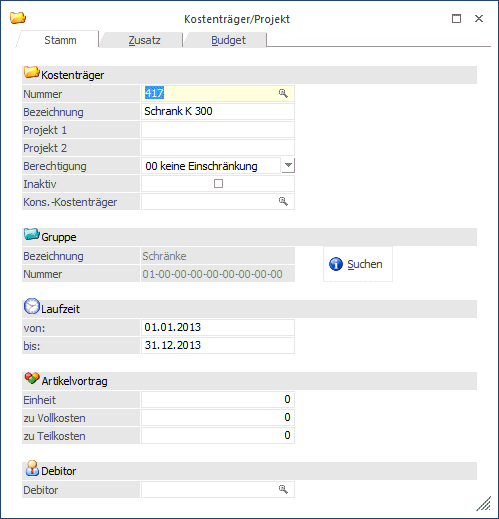
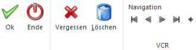
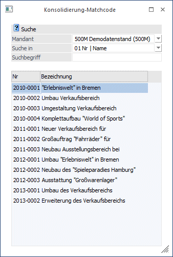
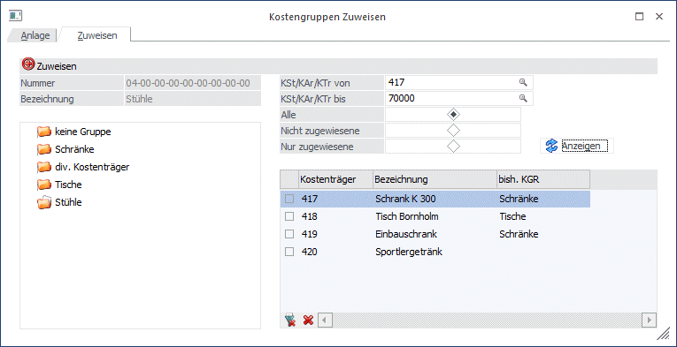
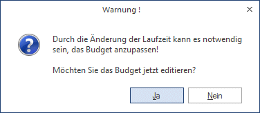
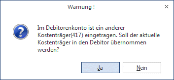

Ein Kostenträger kann sowohl ein Produktionsartikel als auch ein Projekt (Auftrag) oder auch ein Kunde sein. Erst durch die Produktion/Abarbeitung eines Kostenträgers/Projektes entstehen Einzelkosten und variable Anteile in den Gemeinkosten.
Der Kostenträgerstamm wird über den Menüpunkt
1 Stammdaten
1 Kostenträger/Projekt
oder Schnellaufruf
1 STRG + 3
aufgerufen.

Buttons

Ø OK
Durch Drücken der OK-Taste (F5) wird die neue Kostenart gespeichert.
Ø Ende
Mit Ende verlassen Sie den Bildschirm, ohne die Eingaben zu speichern (wenn Sie zuvor nicht OK gedrückt haben).
Ø Vergessen
Durch Anklicken des Vergessen-Buttons werden alle Änderungen rückgängig gemacht und der Ursprungszustand der Kostenart wird wieder hergestellt.
Ø Löschen
Mit dem Löschen-Button kann eine bereits vorhandene Kostenart gelöscht werden.
Ø Navigationsleiste (VCR)
Über die sogenannte VCR-Buttonleiste kann durch Mausklick zwischen den einzelnen Kostenstellen, bzw. Abteilungen geblättert werden:
ü  Damit kann der erste Datensatz angesprochen
werden.
Damit kann der erste Datensatz angesprochen
werden.
ü  Damit kann der vorherige Datensatz
angesprochen werden.
Damit kann der vorherige Datensatz
angesprochen werden.
ü  Damit kann der nächste Datensatz angesprochen
werden.
Damit kann der nächste Datensatz angesprochen
werden.
ü  Damit kann der letzte Datensatz angesprochen
werden.
Damit kann der letzte Datensatz angesprochen
werden.
ü  Damit wird die nächste freie Nummer für die
Neuanlage gesucht.
Damit wird die nächste freie Nummer für die
Neuanlage gesucht.
Fensterbutton
Ø 
Mit dem Suchen-Button oder Alt + S gelangen Sie in den Kostengruppenmatch, um bereits angelegte Kostengruppen übernehmen zu können.
Ø Nummer
Eingabe einer alphanumerischen, max. 20stelligen Kostenträgernummer.
Ø Bezeichnung
Kostenträgerbezeichnung, die in der Kalkulation angedruckt wird, max. 35stellig.
Wird ein Kostenträger neu angelegt, dann wird im Feld "Bezeichnung" der Text
Ø NEUEINGABE - F9 für Übernahme
angezeigt. In dem Fall kann durch Drücken der F9-Taste nach allen bereits vorhandenen Kostenträgern gesucht werden. Die Daten des ausgewählten Kostenträgers werden dann in den neuen Kostenträger übernommen. In den KORE-Parametern (siehe auch WinLine START, Parameter/Applikations-Parameter) kann eingestellt werden, ob bei der Übernahme auch die Zusatzfelder und/oder das Kostenträgerbudget berücksichtigt werden sollen oder nicht.
Ø Projekt 1/Projekt 2
Zwei Beschreibungszeilen zu jeweils max. 35 Zeichen.
Ø Berechtigungen
Hier kann eine Berechtigung vergeben werden, die das Editieren im Stamm und die Verwendung dieser Stammdaten in den KORE-Erfassungsprogrammen steuert.
Hinweis 1
Benutzern des Typs "Administrator" oder mit der Administratorenberechtigung "Benutzeradministrator" steht in der Auswahlbox der Punkt ">> Neues Profil" zur Verfügung. Über die Anwahl dieses Eintrags kann in der Folge ein neues Berechtigungsprofil angelegt werden.
Ø Inaktiv
Wenn ein Datensatz auf Inaktiv gesetzt wird, hat das vorerst nur die Auswirkung, dass er nicht mehr im Matchcode angezeigt wird. (Wird der Matchcode aufgerufen, kann durch Setzen des Häkchens entschieden werden, dass inaktive Kostenträger eventuell doch angezeigt werden sollen). Inaktive Kostenstellen, -arten, und -träger können nicht bebucht werden.
Ø Kons. - Kostenträger
Dieses Feld dient zum Zuweisen eines Kostenträgers zwischen Haupt und Submandanten und wird über die Zuweisung verändert. Damit wird der Kostenträger bei einer Änderung im Hauptmandanten im Submandanten automatisch abgeglichen/aktualisiert (wenn die Daten mit einer entsprechenden Vorlage verändert werden).
Wenn eine Änderung im Submandanten durchgeführt wird, wird der Hauptmandant auch aktualisiert, wenn der Kostenträger dort nicht im Feld "Kons.-Kostenträger" eingetragen ist und der Konsolidierungskostenträger leer ist. Außerdem wird im selben Mandanten nach dem gleichen Konsolidierungskostenträger gesucht und die Stammdaten werden entsprechend aktualisiert.
Wenn der Matchcode aufgerufen wird, öffnet sich folgendes Fenster:

Hier kann nun eingestellt werden, wonach in anderen Mandanten gesucht werden soll.
Hinweis 2
Wurde ein Haupt- und ein Submandant definiert, öffnet sich dasselbe Fenster, wie bei der Zuweisung im WinLine START.

Bei dieser Zuweisung wählt man den Kostenträger des Hauptmandanten und sucht in allen Mandanten nach der Nummer oder dem Namen (Bezeichnung) des passenden Kontos. Über das Flag kann jetzt eine Konsolidierung des Kostenträgers 417 aus dem Mandant 300M mit dem Kostenträger 70000 aus dem Mandant 500M konsolidiert werden.
Ø Gruppe
Geben Sie die Nummer der Kostenträgergruppe an, die für diese Artikel- oder Projektgruppe vergeben wurde. Mit dem Suchen-Button oder Alt + S gelangen Sie in den Kostengruppenmatch um bereits angelegte Kostenträgergruppen übernehmen zu können.
Ø Laufzeit
Wenn das Projekt (der Kostenträger) durch die Eingabe einer Laufzeit begrenzt wird, werden die im Menüpunkt Budget-Erfassung-Projekte eingetragenen Werte in den Perioden der eingetragenen Laufzeit des Kostenträgers budgetiert. Die Laufzeit kann über mehrere Perioden / Jahre eingetragen werden. In den FAKT-Parametern/Belege/Allgemein kann eingestellt werden, ob Kostenstellen und Kostenträger im Zuge der Belegerfassung auf "Gültigkeit" geprüft werden sollen. Ist dieser Punkt aktiviert, kann für einen Kostenträger für einen Zeitraum nach Ablauf der Laufzeit kein Beleg mehr erfasst werden. Wird die Laufzeit geändert, weist die WinLine daraufhin, dass das Kostenträgerbudget eventuell geändert gehört. Nach der entsprechenden Meldung

wird bei "Ja" ins Register Budget gewechselt, um Änderungen vorzunehmen. Bei "Nein" setzt das Programm die Eingabereihenfolge im Register Stamm fort.
Artikelvortrag
Im gemeinsamen Einsatz mit der FAKT können für die Bewertung der Lagerstände die folgenden Eingabefelder verwendet werden.
Ø Einheit
Hier können die Einheiten (14-stellig, numerisch) als Anfangsbestand des Projektes, Produktionsartikels bzw. Artikels eingetragen werden. Die hier eingetragene Einheit (Menge, Stück) ist die Basis zur Berechnung des Endbestandes in einigen Auswertungen, z.B. der Nachkalk. pro Stück und der Kostenträgererfolgsrechnung. Die Aktualisierung der Zu- und Abgänge für die Kostenrechnung erfolgt direkt nach der Lageraktualisierung in der FAKT (Lieferscheindruck/Faktura im Einkauf oder Verkauf).
Ø zu Vollkosten / zu Teilkosten
Der Betrag, mit dem der Anfangsbestand bewertet wird, kann hier zu Voll- und Teilkosten eingetragen werden.
Ø Debitor
Eintragung eines Debitorenkontos. Es wird automatisch im Personenkontenstamm - Register FAKT der Kostenträger gespeichert. Wurde in den Personenkonten bereits ein Kostenträger gespeichert, erhalten Sie noch eine Warnmeldung, ob Sie diesen Kostenträger wirklich überschreiben wollen.

Hinweis
Eine Kostenträgerauswertung für die Personenkonten kann in der FAKT - Menü Auswertungen - Beleganalyse - Kostenträgerauswertung beim Einsatz des WinLine FAKT-Modules durchgeführt werden.
Ø OK
Durch Drücken der OK-Taste (F5) wird die neue Kostenart gespeichert.
Ø Ende
Mit Ende verlassen Sie den Bildschirm, ohne die Eingaben zu speichern (wenn Sie zuvor nicht OK gedrückt haben).
Ø Vergessen
Durch Anklicken des Vergessen-Buttons werden alle Änderungen rückgängig gemacht und der Ursprungszustand der Kostenart wird wieder hergestellt.
Ø Löschen
Mit dem Löschen-Button kann eine bereits vorhandene Kostenart gelöscht werden.
Ø Navigationsleiste (VCR)
Über die sogenannte VCR-Buttonleiste kann durch Mausklick zwischen den einzelnen Kostenstellen, bzw. Abteilungen geblättert werden:
ü Damit kann der erste Datensatz angesprochen
werden.
ü Damit kann der vorherige Datensatz
angesprochen werden.
ü Damit kann der nächste Datensatz angesprochen
werden.
ü Damit kann der letzte Datensatz angesprochen
werden.
ü Damit wird die nächste freie Nummer für die
Neuanlage gesucht.
Fensterbutton
Ø
Mit dem Suchen-Button oder Alt + S gelangen Sie in den Kostengruppenmatch, um bereits angelegte Kostengruppen übernehmen zu können.